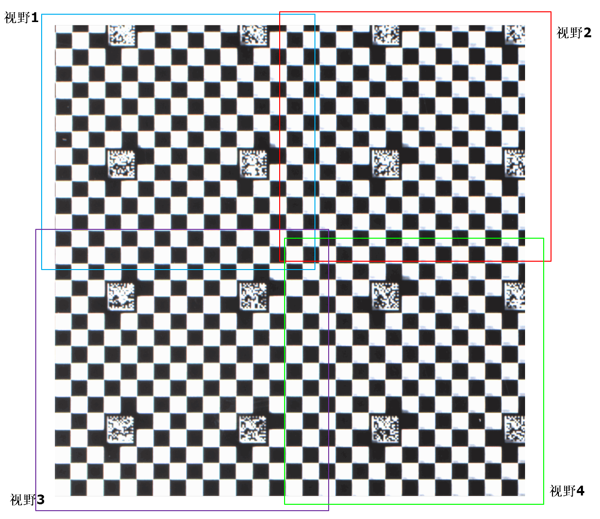
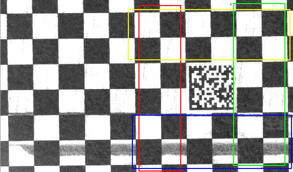
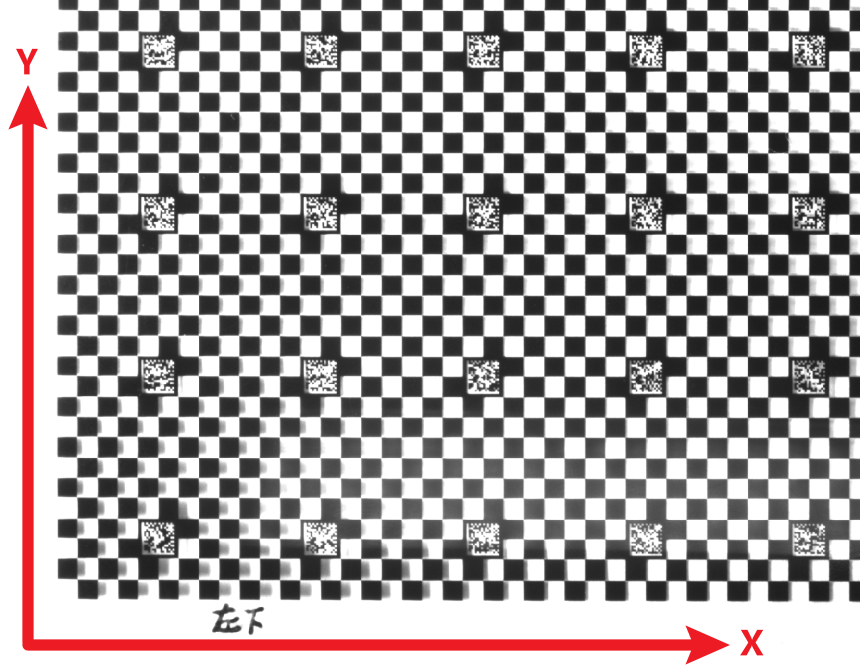
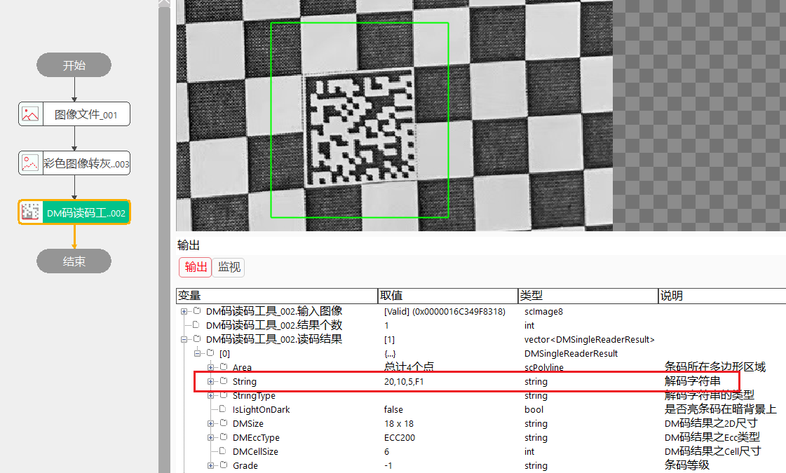
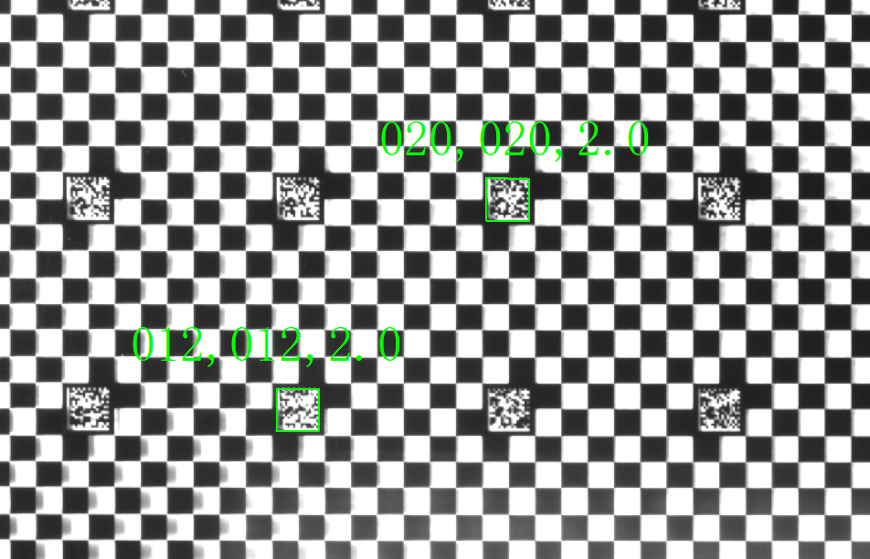
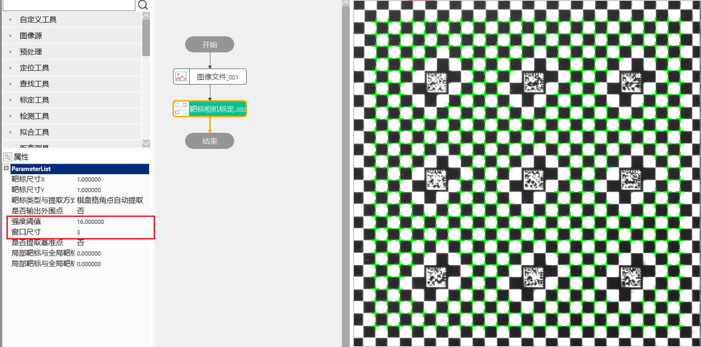
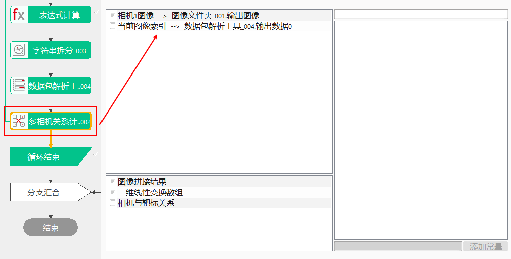
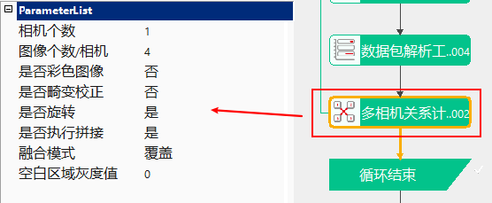
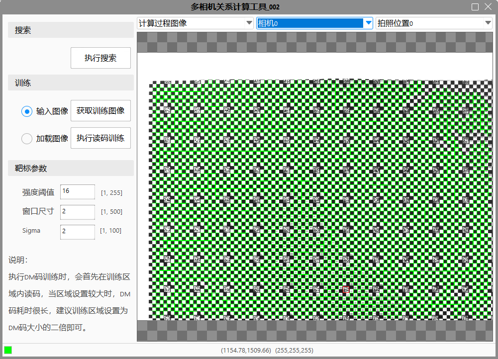

多相机关系计算工具主要用于计算空间中多个相机之间的位置关系（或单个相机在多个位置拍照），通过计算多个相机之间的空间关系，能够利用一定的算法将这些相机采集的实时图像拼接为一幅完整的图像。此工具常和“多图像拼接工具”配合使用，用于完成多相机的关系计算和图像拼接。
由于面阵相机的视野和分辨率有限，有时单个相机可能无法满足大视野、大幅面，这时需要将多个相机获取的图像进行拼接处理，可以使用多图像拼接工具。而多图像拼接的前提是需要知道这些图像之间的空间转换关系，多相机关系计算工具则是用于这种场景下，将计算的转换关系通过参数链的方式传递给多图像拼接工具。

在进行相机转换关系计算时，每个相机（或单个相机在多个位置）均采集同一个完整的棋盘格靶标，而此棋盘格靶标上的DM码中包含其在整个靶标坐标系下的实际坐标，工具内部通过每幅图像中包含的DM码计算相机坐标系和全局靶标坐标系之间的转换关系，从而进一步可以得到各个相机坐标系之间的转换关系。
工具内部需要读取靶标DM码内的信息，用于建立相机坐标系和全局靶标坐标系的关系，且这一过程是自动进行的，所以对靶标格式有一定的约束。
DM码的内容格式为“X,Y,L,S”，其中X,Y为二维码的全局靶标坐标值，单位为格子，即此二维码距离靶标原点的格子数量；L表示每个格子的尺寸，单位为mm/格子；S为额外信息，可根据不同的项目需求做定制，对整个标定没有影响。
字符串内部的分隔符为英文下的逗号",“。
保证视野中提取到的角点大于60个.
保证图像中DM码的四周有1~2排的棋盘格，DM码越靠近视野中心，越有利于工具内部自动读取二维码。

全局靶标坐标系的方向是向右向上的（和二维码的L边方向一致）

1.验证DM内容
用户需要验证所使用的靶标是否满足要求时，可以采集一幅图像，使用VA中的“DM码读码工具”进行读码，以保证项目中使用的靶标满足要求。

2.验证全局靶标坐标系的方向
可取一张靶标图像，利用DM码读码工具读取不同位置处的两个二维码，查看二维码内的坐标值，并观察其坐标增长趋势是否和DM码的L边方向一致。如下图所示，DM码的L边为向右向上，而此图中靠右上的二维码坐标值比左下二维码的坐标值更大，说明此靶标的全局靶标坐标系方向和二维码L边方向一致，则其符合标准标靶的坐标系标准。

3.验证提取角点个数
工具内部调用的算法接口和"靶标相机标定工具"一致，可以使用“靶标相机标定工具”做简单的验证。从现场使用的经验来看，提取到的角点数量大于60 ~ 70个时，就能够完成标定计算了。




相机/拍照位置下拉列表
通过修改下拉列表的内容，用户可以查看每个相机在各个位置采集的图像以及图像中靶标角点提取结果，DM码提取结果等信息。
训练
此过程执行DM训练，类似几何定位。
靶标参数
强调阈值：黑白格的灰度差异程度，提取的角点对应强度要高于该阈值，范围为[1, 255]
窗口尺寸：推荐设置为一个棋盘格的像数宽度的大小，范围为[1, 500]
Sigma：角点越尖锐清晰值越小，越模糊值越大，范围为[0,1000]
| 现象描述 | 解决方法 |
|---|---|
| 标定失败 | 确认链接的图像、索引值是否正确（即其是否和属性栏的参数设置匹配）；确认提取的角点个数是否足够（如果不够适当调整靶标参数）；DM码不能太靠近图像边缘 |
| 工具执行时间长 | 工具内部需要提取靶标角点、DM码信息、计算相机坐标系和靶标坐标系的关系，所以执行时间长为正常现象 |
| 读码失败 | 查看DM码的四周是否有1~2排的棋盘格 |
| 参数名称 | 参数说明 |
|---|---|
| 相机个数 | 支持的相机个数，范围为1~16 |
| 图像个数/相机 | 每个相机采集的图像数量，范围为1~16，当相机个数为1时，此值最小为2 |
| 是否彩色图像 | 选择是时，支持彩色图像的拼接 |
| 是否畸变校正 | 是否对输入的图像进行畸变校正 |
| 校正类型 | 隶属于畸变校正，确定畸变校正的类型，当畸变校正为是时显示此参数 |
| 是否裁切 | 隶属于畸变校正，当选是，且校正类型为镜头畸变校正时，显示此参数 |
| 是否旋转 | 隶属于畸变校正，当选是，且校正类型为投影和镜头畸变校正时，显示此参数 |
| 是否执行拼接 | 选择是时，在完成相机关系计算后，会将原始图像拼接，并输出到工具的Result视图中 |
| 融合模式 | 进行拼接是，两幅图像重合区域的算法处理模式 |
| 空白区域灰度值 | 拼接结果图像中未被子图覆盖的区域，使用此值进行填充，范围为0~255 |
| 参数名称 | 参数说明 |
|---|---|
| 相机1~16图像 | 链接相机1~16采集的图像，当为灰度图像时显示此参数 |
| 相机1~16RGB图像 | 链接彩色相机1~16采集的图像，当为彩色图像时显示此参数 |
| 当前图像索引 | 用于标识当前输入的图像为相机采集的第几幅图像 |
| 参数名称 | 参数说明 |
|---|---|
| 图像拼接结果 | 当属性栏选择执行拼接时，显示拼接图像的尺寸信息 |
| 靶标相机标定结果数组 | 靶标相机标定结果，用于进行图像畸变校正，可用于需要进行图像畸变校正的工具 |
| 二维线性变换数组 | 表示各个图像间的空间转换关系，主要用于“多图像拼接工具” |
| 相机与靶标关系 | 计算图像坐标系和靶标坐标系之间的关系 |
| 执行结果 | 工具执行结果。 |
| 执行时间 | 工具执行时间。 |
参见“\Samples\多图像拼接工具.gvp”。